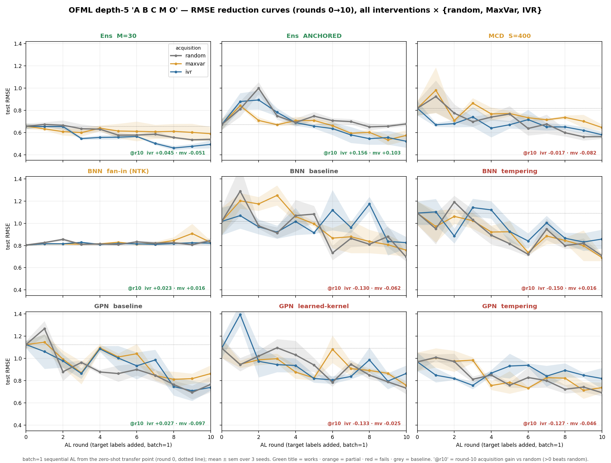
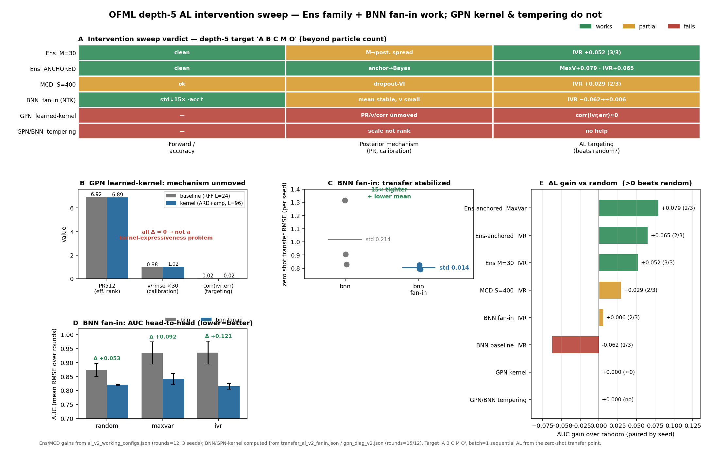

Claim 2 · Closed-loop active learning repairs non-identifiable transfer — as far as capacity allows
A B C M O in closed loop from the zero-shot transfer pointA cross-sectional audit of Claim 2. We put 9 surrogate models (ensemble family, MC dropout, Bayesian NN, GP-NN) on the same depth-5 single target A B C M O, launch them into batch=1 sequential active learning from the zero-shot transfer point (WARM=0, round 0), and race the three acquisition rules random / maxvar / ivr. There are two questions: (i) does active observation at the target terminal repair non-identifiable transfer and pull the error off the floor (Theorem 3), and (ii) does this repair happen for every surrogate, or is it rate-limited by the capacity of the surrogate's posterior mechanism? The answer was the latter — closed-loop AL repairs transfer, but only "as far as capacity allows," i.e., when the surrogate's posterior has usable structure (variance that correlates with error). For the central cost-indexed comparison, see Figure 2 (cost-indexed).

Ens M=30 / Ens ANCHORED, ivr/maxvar clearly fall below random and push the final down to a best of about 0.44. For GPN learned-kernel and *-tempering, the three curves overlap and acquisition has no effect. Click to enlarge.
Against non-identifiable forward transfer (the residual that terminal-only cannot remove, the floor of Claim 1), we measure across surrogate models how far closed-loop AL that directly and actively observes the target terminal can pull the error off the floor. The core of Claim 2 is two-tiered: (1) repair happens — for a suitable surrogate, information acquisition (ivr = integrated variance reduction / maxvar = maximum predictive variance) beats random and pushes the final NRMSE below the floor (Theorem 3). (2) but it is capacity-limited — for a surrogate whose posterior lacks "variance that correlates with error" (the mechanism-invariant GPN learned kernel, or tempering that moves only scale not rank), no acquisition rule can beat random. We separate these two points on a single target with 9 surrogates and 3 seeds.
The synthetic GP composed-field benchmark gpcomp_bench_v2, depth 5, single target A B C M O (operations \(\{A,B,C,M\}\) + terminal \(O\)). Training starts from the zero-shot transfer point (WARM=0): at round 0 it sees no target label at all, and predicts the target by pushforward-specializing a composed module trained on 9 sources × N_SRC=100 = 900 warm rows (= the transfer point of Claim 1). Thereafter we run 12 acquisition rounds of sequential AL with batch=1; in each round the three acquisition rules random / maxvar / ivr each pick one point from the acquisition pool, and we retrain from scratch on the union. The pool is pool=400, evaluation is test=200 (noise-free, ground truth), and the IVR reference set is ref=32 (disjoint from test and pool). 9 surrogate models × 3 acquisition rules × 3 seeds. Observation noise \(\sigma=0.02\). The grid in Figure A shows round 0→10 (the Ens/MCD family runs 12 rounds; the BNN/GPN diagnostic runs go to 12–15 rounds to take the AUC).
Note: the figure displays raw test RMSE, but because it is a single target with self-scale normalization, this is RMSE (= an NRMSE approximation; up to the constant factor \(s_\star\)), and the AUC gain and ranking are scale-invariant (when read against the floor baseline of Claim 1, it coincides with the NRMSE normalized by each target's self-scale \(s_\star=\sqrt{\operatorname{mean}_x(f-\bar f)^2}\)). Leakage controls: test / pool / ref are mutually disjoint Sobol streams, test is noise-free, and each round retrains completely (no warm-start contamination).
| Family | Surrogate | Posterior / uncertainty mechanism | Key settings | Verdict |
|---|---|---|---|---|
| Ensemble | OFML-Ens (M=30) | Deep ensemble (seed-only, 30 members, no bootstrap) | Composed net, latent_dim=10, hidden=32 | Effective |
Anchored-Ens | Anchored ensemble (anchor → approximate Bayesian posterior) | Per-member independent prior-anchor regularization | Effective | |
| MC dropout | OFML-MCD (S=400) | dropout-VI (S=400 forward samples) | Composed net, hidden=32 | Partial |
| Bayesian NN | BNN fan-in (NTK) | mean-field VI + fan-in (NTK) scale initialization | prior fan-in scaling (stabilizes transfer 15×) | Partial |
BNN baseline | mean-field VI (standard initialization) | — | Ineffective | |
BNN tempering | posterior tempering (temperature scaling) | scale not rank (rank-invariant) | Ineffective | |
| GP-NN | GPN baseline | RFF approximate kernel (L=24) | random Fourier features | Baseline |
GPN learned-kernel | learned kernel (ARD+amp, L=96) | higher expressivity but PR/v/corr invariant | Ineffective | |
GPN tempering | posterior tempering (temperature scaling) | no help (scale not rank) | Ineffective |
Let the error of each acquisition rule \(a\in\{\text{random},\text{maxvar},\IVR\}\) at round \(r\) be \(\eps^a(r)=\sqrt{\operatorname{mean}_x(\mu^a_r-f)^2}\,/\,s_\star\) (macro NRMSE, with \(s_\star\) the self-scale). The main metric is the seed-paired IVR AUC gain: \[ \Delta_{\IVR}=\E_{\text{seed}}\!\Big[\tfrac1R\textstyle\sum_{r=1}^{R}\eps^{\text{rand}}(r)-\tfrac1R\sum_{r=1}^{R}\eps^{\IVR}(r)\Big],\qquad \text{win rate}=\frac{\#\{\text{seed}:\ \bar\eps^{\text{rand}}-\bar\eps^{\IVR}>0\}}{3}. \] \(\Delta_{\IVR}>0\) means "IVR beats random on the round average" = closed-loop AL contributes to repair, and the win rate is its seed robustness. maxvar is defined analogously. The best final is the smallest NRMSE among the three acquisition rules at the round terminus. Acquisition uses maxvar = maximum sample predictive variance and ivr = the rank-1 Cohn ALC score \(\sum_{R}\operatorname{cov}_{rc}^2/(\operatorname{var}_c+\sigma^2)\) (\(\sigma^2=0.02^2\), reference set \(|\mathrm{ref}|=32\)). The global variance vanishing corresponds to the convergence theory of noisy \(\IVR/\SUR\) (Theorem 2).
| Element | Value | Property |
|---|---|---|
| source training (warm rows) | 9 sources × N_SRC=100 = 900 points | with noise \(\sigma=0.02\), used for the round-0 transfer |
| target labels (round 0) | 0 points (WARM=0) | zero-shot transfer point = the transfer of Claim 1 |
| acquisition pool | 400 points/target | disjoint from test and ref |
| test | 200 points/target | noise-free (ground truth) |
| IVR reference | 32 points/target | disjoint from test and pool |
| acquisition rounds | 12 (batch=1, complete retraining each round) | 3 seeds, 9 surrogates × 3 acquisition rules |
Hovering over a module type highlights the same shared operation across source and target (= weight sharing). You can see that the single target A B C M O composes all operations of the 9 sources with order (= a transferable composition).
Closed-loop AL beats random only for surrogates that have a "usable posterior." In the ensemble family (Ens M=30, Anchored-Ens), ivr/maxvar fall below random most clearly, and Ens M=30 IVR pushes the final down to 0.44 with +0.052 (3/3 seeds). Anchored-Ens, via anchor → Bayesianization, gives MaxVar +0.079 and IVR +0.065 (2/3 each). OFML-MCD is partial at +0.029 (2/3). By contrast, the tempering family (moving only scale, not rank) and GPN learned-kernel (mechanism-invariant) show no acquisition effect, and the three curves overlap.
| Family | Surrogate | IVR AUC gain (win/seed) | Best final RMSE (≈NRMSE) | Verdict |
|---|---|---|---|---|
| Ensemble | OFML-Ens (M=30) | +0.052 (3/3) | 0.44 | Effective |
| Anchored-Ens | +0.065 (2/3), MaxVar +0.079 (2/3) | 0.52 | Effective | |
| MC dropout | OFML-MCD (S=400) | +0.029 (2/3) | 0.57 | Partial |
| Bayesian NN | BNN fan-in (NTK) | +0.006 (2/3) | 0.82 | Partial |
| BNN baseline | −0.062 (1/3) | 0.73 | Ineffective | |
| BNN tempering | ≈0.000 (0/3, no help) | 0.68 | Ineffective | |
| GP-NN | GPN baseline | ≈0.00 (round-10 +0.027, AUC≈0) | 0.70 | Baseline |
| GPN learned-kernel | 0.000 (≈0, corr(ivr,err)≈0) | 0.74 | Ineffective | |
| GPN tempering | 0.000 (0/3, no help) | 0.72 | Ineffective |
Intervention diagnostics (Figure B). Whether it works or not is decided by the posterior mechanism. Anchoring approximately Bayesianizes the ensemble (anchor → Bayes) and activates AL targeting. fan-in (NTK) makes zero-shot transfer 15× tighter (std 0.214→0.014) and also lowers the mean, flipping the AUC from negative to a win (Δ +0.053/+0.092/+0.121). Conversely, tempering merely temperature-scales the posterior without moving the rank (scale not rank), and GPN learned-kernel, even with higher expressivity, keeps the mechanism invariant (PR512 6.92→6.89, v/rmse 0.98→1.02, corr(ivr,err) 0.02→0.02) = it is not a problem of kernel expressivity; because the IVR signal is uncorrelated with the error, acquisition has no effect.
This cross-sectional audit visualizes the two tiers of Claim 2 directly. First tier (repair happens): actively observing the target terminal from the zero-shot transfer point (round 0) monotonically lowers the error for Ens / Anchored-Ens / MCD, and Ens M=30 IVR beats random on 3/3 seeds, reaching a final of 0.44 — the non-identifiable terminal-only residual (the floor of Claim 1) is pulled below the floor by active observation (the target-terminal active correction of Theorem 3). Second tier (capacity-limited): repair is not unconditional. Closed-loop AL works only for surrogates whose posterior has "variance that correlates with error". Tempering does not move the rank, and the GPN learned kernel is mechanism-invariant (corr(ivr,err)≈0), so no acquisition rule can beat random. In other words, the latter clause of "closed-loop active learning repairs non-identifiable transfer — as far as capacity allows" is quantitatively substantiated by the cross-surrogate intervention sweep. The separation — interventions that raise posterior capacity, like anchoring / fan-in, activate AL, while interventions that do not change the rank, like tempering, are ineffective — is organized in the verdict table (Figure B(A)).
For the placement in the central cost-indexed view (integrating \(b=0\) transfer, \(b>0\) adaptation, and the aliasing floor), see Figure 2; for the rank audit of identifiability, see the Φ/Ψ audit; for the terminal-only failure set, see Table 1 (C1–C6); for the details of forward transfer, see Figure 3a.
Note — limitations: the final RMSE is read off the curves in Figure A (round terminus, best acquisition rule) and is an RMSE (≈NRMSE) on a single target. The AUC gain uses only 3 seeds (the win rate is a coarse discrete quantity, n/3), and the BNN/GPN diagnostic runs have uneven round counts of 12–15 (see the Figure B footnote). The GPN baseline's round-10 IVR +0.027 averages to ≈0 in the AUC and is variation within seed variance. The 0.000 for tempering means "statistically indistinguishable from random" and is not an exact zero. The intervention sweep is limited to the depth-5 single target and does not evaluate depth dependence or interactions among multiple targets.
The zero-shot transfer point (round 0) is the consequence of the composed transfer that specializes to the target via pushforward = the identifiability of Claim 1 (Proposition 4, and the bridge Lemma 6). From here, actively observing the target terminal to recover terminal-response consistency is Theorem 3 (target active correction), and the rescue of the non-identifiable residual is Proposition 5. The basis for IVR being able to drive the error below the floor is the global vanishing of the latent-function variance under noisy \(\IVR/\SUR\) over the full support \(\lambda\) (Theorem 2) — but only when the posterior variance tracks the true error. Tempering and the mechanism-invariant learned kernel do not satisfy this premise (variance–error alignment), so the \(\SUR\)-type variance vanishing does not translate into error vanishing. This "as far as capacity allows" upper bound is also consistent with the identification limit with respect to depth and coverage (Proposition 6).